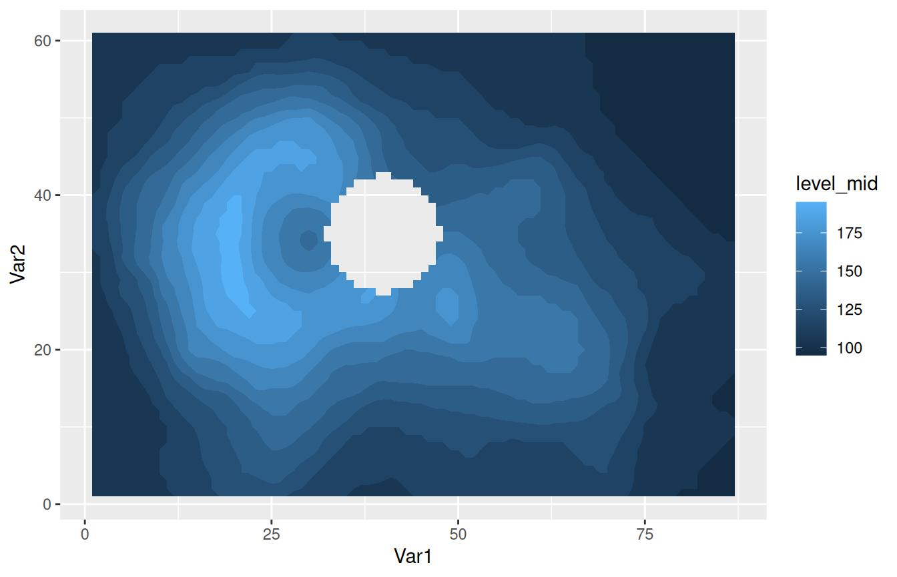
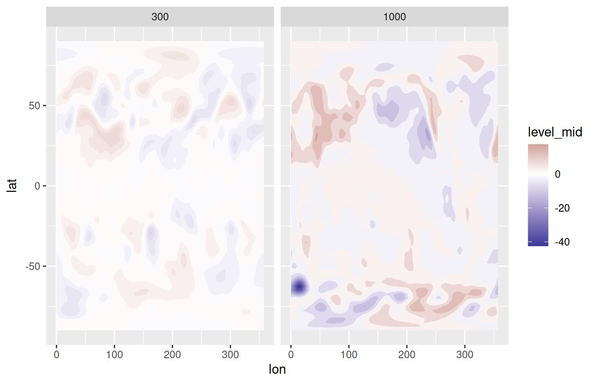
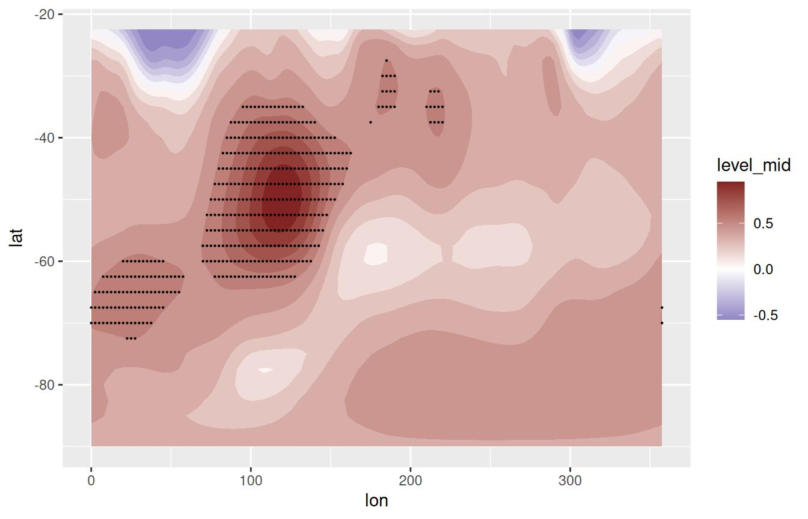
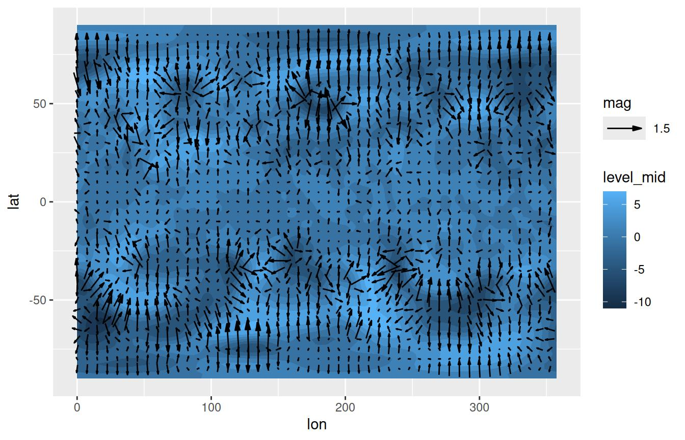

Visualization tools
Elio Campitelli
2018-08-11
Source:vignettes/Visualization-tools.Rmd
Visualization-tools.RmdOne of the “conceptual branches” of metR is the visualization tools. These are a set of functions that interface with ggplot2 for easier and better plotting of meteorological (an other) fields.
Scales
Many meteorological fields are defined in a longitude×latitude×level grid, so metR includes scales for each dimension. These are glorified wrapers around scale_*_continuous() with sensible defaults and, in the case of scale_*_level(), the implementation of reverselog_trans().
There are also scale_color_divergent() and scale_fill_divergent() which are wrapers around scale_*_gradient2() but with sane default colors for positive and negative values –particularily useful for plotting anomaly values.
To see how this scales work, let’s visualize the vertical distribution of temperature anomalies from the zonal mean.
library(metR)
library(ggplot2)
library(data.table)
temperature <- copy(temperature)
temperature[, air.z := Anomaly(air), by = .(lat, lev)]
# Plot made with base ggplot
(g <- ggplot(temperature[lon %~% 180], aes(lat, lev, z = air.z)) +
geom_contour(aes(color = ..level..)))
While this is fine, since pressure levels are roughly proportional to \(\mathrm{e}^{-z}\) in meteorology we usually plot the vertical coordinate as \(-\log(p)\). However, while ggplot2 has scale_y_log10() and scale_y_reverse(), they don’t work together. metR defines the new transformation reverselog_trans() that can be used with any scale but that is the default for scale_*_level().
On the other hand, scale_*_latitude() (and scale_*_longitude()) not only defaults expand to c(0, 0), but also has a ticks argument that specifies the spacing of breaks between -90 and 90 in the case of scale_*_latitude(), and between 0 and 360 in the case of scale_*_longitude().
These scales default to printing no label, since usually the dimensions are understood by the shape of the plot.

Note: scale_*_longitude() (currently) assumes the data goes from 0° to 360° but puts labels between -180° and 180°. This very idiosyncratic choice stems from the fact that model output is usually in the [0; 360) range but it’s easier to read maps in the (-180; 180] range. This may change in the future.
Geoms and stats
geom_contour_fill()
In ggplot2, the ‘canonical’ way to get filled contours is by using stat_contour() with a polygon geom and mapping fill to level (see this issue), but this has three important limitations.
It doesn’t work well for contours that end at the edges
External contours sometimes hide internal ones (small red contour in the figure below)
There’s no distinction between contours with the same level but different internal values (blue contours in the figure below)
geom_contour_fill() makes some adjustments to the data and computes an aditional variable int.level (which is de defautl mapping for the fill aesthetic) that solve these problems.
breaks = seq(100, 200, by = 10)
v <- setDT(melt(volcano))
ggplot(v, aes(Var1, Var2, z = value)) +
stat_contour(aes(fill = ..level..), geom = "polygon", breaks = breaks) +
geom_contour(color = "red", size = 0.2, breaks = 150) +
geom_contour(color = "blue", size = 0.2, breaks = 160) +
guides(fill = "none")
ggplot(v, aes(Var1, Var2, z = value)) +
geom_contour_fill(breaks = breaks) +
guides(fill = "none")
In principle, geom_contour_fill() needs a full regular grid with no missing values and by default with fail if otherwise. However it can automatically impute missing values. With the na.fill parameter you can have some control over the imputaton of NAs. Setting it to TRUE (the default) will impute missing values with spiline bivariate interpolation. Other optins are passing a constant numeric value or a function that takes the vector of values and return one value (like mean).
# Adding missing values
v[, value.gap := value]
set.seed(42) # For reproducibility
v[sample(1:.N, .N*0.3), value.gap := NA]
ggplot(v, aes(Var1, Var2, z = value.gap)) +
geom_contour_fill(breaks = breaks, na.fill = TRUE) +
geom_point(data = v[is.na(value.gap)], size = 0.1, alpha = 0.3)
#> Warning: imputing missing valuesWe can apply this to a more realistic dataset
ggplot(temperature[lev == 300], aes(lon, lat, z = air.z)) +
geom_contour_fill() +
scale_fill_divergent() +
scale_x_longitude() +
scale_y_latitude()
As an important note, this stat currently only works with rectangular grids.
geom_text_contour and geom_label_contour
Labeling contours is also a problematic aspect of ggplot2. geom_text_contour() and geom_label_contour() can be use to automatically add text or labels to the flattest part of a contour.
ggplot(temperature[lev == 300], aes(lon, lat, z = air.z)) +
geom_contour_fill() +
geom_contour(color = "black") +
geom_text_contour() +
scale_fill_divergent() +
scale_x_longitude() +
scale_y_latitude()
#> Warning: Ignoring unknown parameters: stroke.colour
By default it labels every 2nd contour (this can be changed by the skip parameter) and it rotates to follow the angle of the contour (this is not available on geom_label_contour()). Since in some datasetss there can be very small contours that should not be labeled for clarity, the min.size argument specifies the minimum points a contour has to have in order to be labeled.
Noticehow labels are drawn on top of contours? The problem is that geom_contour() doesn’t know it’s being labeled; geom_text_contour() adresses this issue by allowing you to draw a stroke arround the text.
ggplot(temperature[lev == 300], aes(lon, lat, z = air.z)) +
geom_contour_fill() +
geom_contour2(color = "black") +
geom_text_contour(stroke = 0.2) +
scale_fill_divergent() +
scale_x_longitude() +
scale_y_latitude()
#> Warning: Ignoring unknown parameters: stroke.colour
geom_contour_tanaka
Illuminated contours (aka Tanaka contours) use varying brightness and width to create an illusion of relief. This can help distinguishing between concave and convex areas (local minimums and maximums), specially in black and white plots or to make photocopy safe plots with divergent colour palettes, or to render a more aesthetically pleasing representation of topogaphy.
(g <- ggplot(temperature[lev == 300], aes(lon, lat, z = air.z)) +
geom_contour_fill() +
geom_contour_tanaka() +
scale_fill_divergent() +
scale_x_longitude() +
scale_y_latitude())
For more on the use of contours, see the Advance Contouring vignette (comming soon).
stat_subset
As a generalization of stat_na() shown above, metR also has stat_subset() which makes a subset of the data according to the subset aesthetic. This makes it possible to show only part of the data in one geom without needing to specify a data argument (specially usefull if the data being plotted is the result of a long pipe and not actually asigned to a data.frame). It has a somewhat limited use in that it cannot perform further statistical transformations of the data.
For example, it can be used if you have a correlation field and want to mark only the points with significant correlations:
data(geopotential) # geopotential height at 700hPa for the southern hemisphere.
ggplot(geopotential[, gh.base := gh[lon == 120 & lat == -50], by = date][
, .(correlation = cor(gh.base, gh)),
by = .(lon, lat)],
aes(lon, lat, z = correlation)) +
geom_contour_fill(breaks = MakeBreaks(0.1)) +
stat_subset(aes(subset = correlation > 0.5),
geom = "point", size = 0.1) +
scale_fill_divergent() +
scale_x_longitude() +
scale_y_latitude()
geom_vector and geom_arrow
Plotting arrows can be a pain. Again, the ‘canonical’ way of plotting vectors is tu use geom_segment() and specify x, y, xend and yend aesthetics which can be a lot of typing when one has the data on location and displacement (or velocity). Instead, metR‘s geom_vector() and geom_arrow() draw vectors defined by their lateral displacements (dx, dy) or their magnitude and angle. It also has some usefull paramters like min.mag, which controls the minimum magnitude for an arrow to be drawn (useful for highlighting only areas of strong ’flow’) and skip, which draws only the nth arrow in the x and y directions.
Both geoms are essentially the same, except that geom_arrow() defaults to preserving direction in coordinate transformations and regardless of the plot aspect ratio. This is recomended if the arrows are ment to convey the direction of the flow in each point instead of being a description of the shape of the flow related to the plot coordinates.
So, as an example, we can plot the temperature gradient like this:
temperature[, c("t.dx", "t.dy") := Derivate(air.z ~ lon + lat,
cyclical = c(TRUE, FALSE)),
by = lev]
(g <- ggplot(temperature[lev == 500], aes(lon, lat)) +
geom_contour_fill(aes(z = air.z)) +
geom_vector(aes(dx = t.dx, dy = t.dy), skip.x = 2,
skip.y = 1) +
scale_y_latitude(limits = c(-90, 0)) +
scale_x_longitude() +
scale_mag())
#> Warning in min(x): no non-missing arguments to min; returning Inf
#> Warning in max(x): no non-missing arguments to max; returning -Inf
#> Warning in min(diff(sort(x))): no non-missing arguments to min; returning
#> Inf
#> Warning: Computation failed in `stat_contour_fill()`:
#> RHS of == is length 0 which is not 1 or nrow (925). For robustness, no recycling is allowed (other than of length 1 RHS). Consider %in% instead.
#> Warning: Removed 5184 rows containing non-finite values (stat_arrow).
In the above example, t.dx and t.dy represent displacements in the same units as the x and y dimension, so using geom_vector() each arrow points perpendicular to the contours even if we change the coordinate system.
g + coord_polar()
#> Warning in min(x): no non-missing arguments to min; returning Inf
#> Warning in max(x): no non-missing arguments to max; returning -Inf
#> Warning in min(diff(sort(x))): no non-missing arguments to min; returning
#> Inf
#> Warning: Computation failed in `stat_contour_fill()`:
#> RHS of == is length 0 which is not 1 or nrow (925). For robustness, no recycling is allowed (other than of length 1 RHS). Consider %in% instead.
#> Warning: Removed 5184 rows containing non-finite values (stat_arrow).
But if we want to plot how the (horizontal) direction changes with height it makes more sense to use geom_arrow() (or geom_vector(preserve.dir = TRUE))
ggplot(temperature[lon %between% c(100, 200) & lat == -50], aes(lon, lev)) +
geom_arrow(aes(dx = dx(t.dx, lat), dy = dy(t.dy)), skip = 1) +
scale_y_level() +
scale_mag()
In this case, an arrow at a 45° angle represents temperature gradient from the southwest regardless of the x and y scales.
The start and direction arguments adjust the behaviour of the arrows. This is useful for working with winds in the meteorological standard (in which 0° means wind from the North and 90° means wind from the East).
geom_streamline
Streamlines are paths tangential to a vector field and provide an intuitive way of visualizing vector fields. geom_streamline() computes streamlines via Euler integration.
(g <- ggplot(temperature[lev == 500], aes(lon, lat)) +
geom_contour_fill(aes(z = air.z), xwrap = c(0, 360)) +
geom_streamline(aes(dx = t.dy, dy = -t.dx), L = 10, res = 2,
arrow.length = 0.3, xwrap = c(0, 360)) +
scale_y_latitude(limits = c(-90, 0)) +
scale_x_longitude())
#> Warning in min(x): no non-missing arguments to min; returning Inf
#> Warning in max(x): no non-missing arguments to max; returning -Inf
#> Warning in min(diff(sort(x))): no non-missing arguments to min; returning
#> Inf
#> Warning: Computation failed in `stat_contour_fill()`:
#> RHS of == is length 0 which is not 1 or nrow (983). For robustness, no recycling is allowed (other than of length 1 RHS). Consider %in% instead.
There are several parametres that control de feel of the result. L and res control the length and resolution, while the skip parameters change the amount of the streamlines. More in depth control over the simulation can be accomplished by the S and dt parameters.
Since streamlines imply a tight relationship between the vector field and the spatial dimensions, it’s important that their units are compatible. A wind field in m/s in a lonitude-latitude grid should first be converted into degrees/s. The functions dlon() and dlat() are an easy way of doing this. This tight coupling also means that they are robuts to coordinate transformations.
g + coord_polar()
#> Warning in min(x): no non-missing arguments to min; returning Inf
#> Warning in max(x): no non-missing arguments to max; returning -Inf
#> Warning in min(diff(sort(x))): no non-missing arguments to min; returning
#> Inf
#> Warning: Computation failed in `stat_contour_fill()`:
#> RHS of == is length 0 which is not 1 or nrow (983). For robustness, no recycling is allowed (other than of length 1 RHS). Consider %in% instead.
stat_streamline() computes three useful variables. step is the integration step, and dx and dy are the components of the vector field at each point. They can be used to visualize information about the field in each point, and to give a sense of direction without arrows.
ggplot(temperature[lev == 500], aes(lon, lat)) +
geom_streamline(aes(dx = t.dy, dy = -t.dx, size = ..step.., alpha = ..step..,
color = sqrt(..dx..^2 + ..dy..^2)), arrow = NULL,
L = 10, res = 2, xwrap = c(0, 360), lineend = "round") +
scale_y_latitude(limits = c(-90, 0)) +
scale_x_longitude() +
viridis::scale_color_viridis(guide = "none") +
scale_size(range = c(0, 1), guide = "none") +
scale_alpha(guide = "none")
Other goodies
guide_colorstrip
The use of geom_contour() and geom_contour_fill() generates a problem because those geoms implicitly discretize a continuous variable, but the default guide (guide_colourbar()) still show a continuous scale. This can be partially solved by using ggplot’s guide_legend()
ggplot(temperature[lev == 300], aes(lon, lat, z = air.z)) +
geom_contour2(aes(color = ..level..), breaks = MakeBreaks(2)) +
scale_color_divergent(guide = "legend",
breaks = MakeBreaks(2)) +
scale_x_longitude() +
scale_y_latitude() + theme(legend.position = "bottom")This has some limitations as can be seen above. First, in the case of geom_contour() the full color scale is replaced by lines. Second, it breaks down if the position of the legend is at the bottom. Finally, the listed colors are the ones mapped to the breaks, which can be a problem in the case of geom_contour_fill() in which the colors are actually the values between breaks.
All of these problems are solved in guide_colorstrip() as can be seen in the figure below.
ggplot(temperature[lev == 300], aes(lon, lat, z = air.z)) +
geom_contour_fill(breaks = MakeBreaks(2)) +
scale_fill_divergent(guide = "colorstrip",
breaks = MakeBreaks(2)) +
scale_x_longitude() +
scale_y_latitude() +
theme(legend.position = "bottom")
By default, colors are mapped to the values in between breaks, so there’s a one-to-one mapping between colors shown in the plot and in the guide. From an aesthetic standpoint, it’s much closer to the cbarn command from GrADS, which a lot of atmospheric scientists are probably used to.
WrapCircular
The function WrapCircular() is an ugly kludge to fix an issue when using polar coordinates in ggplot2 in which contours that cross the dateline are not properly rendered. The workaround is to copy the leftmost data and place it to the right.
See how in the figure on the left, contours that cross the 0° longitude mark are cut, but they join correctly in the figure on the right.
(g <- ggplot(temperature[lev == 300], aes(lon, lat, z = air.z)) +
geom_contour(binwidth = 1.5) +
scale_fill_divergent() +
scale_x_longitude() +
scale_y_latitude(limits = c(-90, -20)) +
coord_polar())
g %+% WrapCircular(temperature[lev == 300],
wrap = c(0, 360)) # change the data. 

This behaviour is now also implemented directly in geom_contour2() and geom_contour_fill().
ggplot(temperature[lev == 300], aes(lon, lat, z = air.z)) +
geom_contour2(binwidth = 1.5, xwrap = c(0, 360)) +
scale_fill_divergent() +
scale_x_longitude() +
scale_y_latitude(limits = c(-90, -20)) +
coord_polar()
DivideTimeseries
This is another ugly kuldge that hopefully will be replaced by a new facetting function (as soon as I understand how they work). The idea is to divide a long timeseries in a series of shorter plots that are easier to interpret.
(g <- ggplot(geopotential[lon == 120 & lat == -50], aes(date, gh)) +
geom_line() +
geom_smooth(span = 0.3) +
scale_x_date(expand = c(0, 0))) 
In the above plot, the timeseries looks noisy and hard to understand since the lines are too steep. Dividing it into 2 facets makes is easier to see what’s going on.